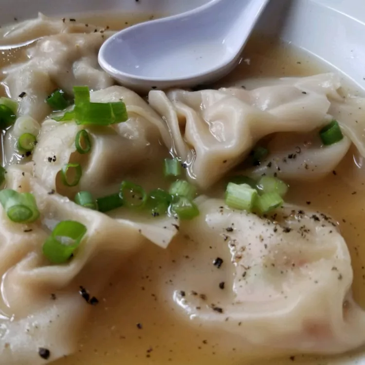

완탕 스프

설명
완탕 스프는 조미된 닭육수에 돼지고기로 채운 만두가 들어간 간단하고 가벼운
중국 클래식 요리입니다. 스프나 튀긴 음식에 사용되어도, 완탕은 항상 맛있고
푸짐한 맛을 더해줍니다.
재료
- 230g 뼈 없는 돼지 안심
- 60g 껍질 벗긴 새우
- 중국 요리 술 1 큰 숟가락
- 가벼운 간장 1 큰 숟가락
- 갈색 설탕 1 작은 숟가락
- 잘 다진 파 1 작은 숟가락
- 썬 생강 1 작은 숟가락
- 완탕 껍질 24개 (3.5인치 정사각형)
- 닭 육수 3 잔
- 잘게 다진 파 2 큰 숟가락
만드는 법
-
돼지고기, 새우, 쌀주, 간장, 갈색 설탕, 파, 생강을 큰 그릇에 섞어서 잘
섞고 25분에서 30분 동안 두기
-
원톤 껍질의 가운데에 약 1 티스푼씩 속재료를 얹는다. 모든 껍질 가장자리를
물로 적셔서 속을 뒤집어 삼각형 모양으로 만든다. 가장자리를 단단히 눌러서
밀봉한다. 속 위에 왼쪽과 오른쪽 모서리를 모아서 겹치게 하고 물을 적신
다음 눌러서 봉인한다. 모든 껍질이 속으로 채워지고 밀봉될 때까지
반복한다.
-
냄비에 닭 육수를 끓이기 시작한다. 완탕을 부드럽게 넣고 5분 동안
조리한다. 그릇에 서빙하고 파를 얹는다.